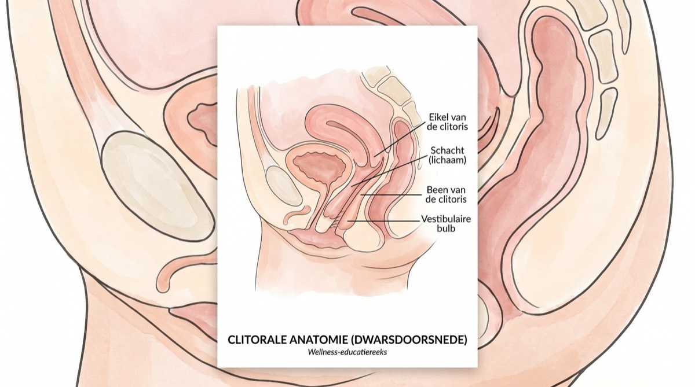
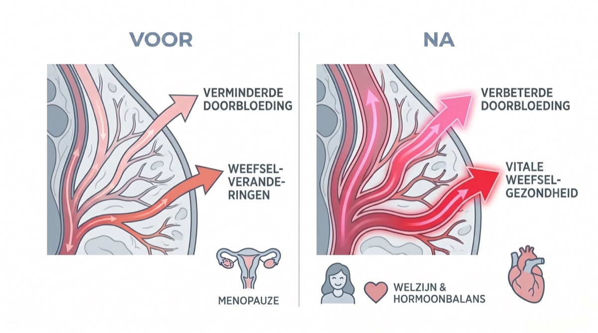

Waarom we hierover schrijven
Toen we voor het eerst hoorden over een ‘citroenvormig wellnessapparaat’ dat in de menopauzewereld als een lopend vuurtje rondging, waren we eerlijk gezegd sceptisch. Maar na gesprekken met tientallen vrouwen, overleg met gynaecologen en, ja, het zelf uitproberen, snappen we de hype wel.
Dit is niet zomaar een wellnesstrend. Het pakt een echt medisch probleem aan dat miljoenen vrouwen treft, maar waar bijna nooit over wordt gepraat: clitorale atrofie en het verlies van seksueel welzijn tijdens de overgang.
Het gesprek waar niemand je voor waarschuwt
Over de opvliegers die je om 3 uur ’s nachts badend in het zweet wakker maken, hoor je alles. Over de hersenmist waardoor je naar je bril zoekt terwijl die gewoon op je neus staat, ook.
Maar niemand schenkt je een glas wijn in en fluistert: “Hé, trouwens, als je het daar beneden niet actief houdt, kan je clitoris echt krimpen.”
Het heet clitorale atrofie en het hoort bij het genito-urinair syndroom van de menopauze (GSM) – een aandoening die volgens de North American Menopause Society tot 50% van de vrouwen ná de overgang treft.
‘De grote verwijdering’
Voor veel vrouwen die we spraken, ging het niet alleen om droogheid. Het was vooral die gevoelloosheid. Een tester vertelde hoe ze haar oude vibrator van vroeger weer eens probeerde: “In plaats van fijn voelde het gewoon… irritant. Of dof. Alsof je eelt probeert te kietelen.”
Medische experts leggen uit dat traditionele vibrators het van wrijving en kracht moeten hebben. Als het weefsel dunner wordt door een laag oestrogeengehalte, kan directe trilling de zenuwen juist verder verdoven – en dat geeft precies dat ‘doffe’ gevoel.
“Stop met trillen. Begin met zuigen.”
– Bekkenbodemspecialisten
Gynaecologen die gespecialiseerd zijn in overgangszorg leggen het zo uit: “Als het oestrogeen daalt, gaat er minder bloed naar het bekkengebied. Daardoor wordt het weefsel dunner, verliest het zijn elasticiteit en neemt het gevoel af. In de medische wereld noemen we dat het use-it-or-lose-it-principe: je hebt een constante bloedtoevoer nodig om het weefsel gezond te houden.”
Maak kennis met de Nancy's Lem
En dan komt dit kleine gele apparaatje in beeld. De Nancy's Lem wordt niet neergezet als seksspeeltje, maar als wellnessapparaat. En na ons onderzoek snappen we waarom.
Anders dan traditionele vibrators, die het van wrijving moeten hebben (en dat kan dunner geworden weefsel juist irriteren), werkt de Lem met luchtdruktechnologie. Zie het als het verschil tussen schuurpapier over je huid halen en een zachte vacuümmassage.
De wetenschap: waarom luchtdruktechnologie werkt
❌ Traditionele vibrators:
Werken met wrijving aan de oppervlakte, en dat kan gevoelig, dunner geworden weefsel irriteren. Kan zorgen voor een dof gevoel of kleine scheurtjes.
✓ Luchtdruktechnologie:
Maakt zachte zuiggolven, zonder direct contact. Trekt zuurstofrijk bloed naar het weefsel en dat is goed voor de gezondheid én het gevoel.
Zo werkt het: de Lem sluit zich zacht rond de clitoris en stimuleert die met golven van luchtdruk. Het bootst het gevoel van orale seks na, maar dan constant en onvermoeibaar. En omdat er geen wrijving is, is er ook geen irritatie.
Maar het echte trucje zit ’m in de natuurkunde: die zachte zuigkracht zorgt voor een vacuümeffect dat zuurstofrijk bloed diep in het weefsel trekt. Zo worden zenuwen wakker gemaakt die jarenlang hebben geslapen.
“Het voelt alsof het het orgasme er gewoon uit trekt… en het blijft daarna veel langer nakloppen.”
– Alisha, bètatester (uit geverifieerde klantreviews)
Hoe houdt de Lem zich staande? Onze vergelijking
We legden de Lem naast de vertrouwde oplossingen voor weefselgezondheid in de overgang
| Kenmerk | Nancy's Lem | Traditionele vibrator | Oestrogeencrème |
|---|---|---|---|
| Werkt bij gevoelig weefsel | ✅ Ja | ❌ Kan irriteren | ⚠️ Trage resultaten |
| Verhoogt bloedstroom | ✅ Diep weefsel | ⚠️ Alleen oppervlakte | ✅ Geleidelijk |
| Geen wrijving of irritatie | ✅ Geen contact | ❌ Veroorzaakt wrijving | ✅ Ja |
| Direct genot | ✅ Direct | ⚠️ Wisselend | ❌ Geen genot |
| Discreet ontwerp | ✅ Lijkt op een citroen | ❌ Overduidelijk | ✅ Ja |
| Aanbevolen door artsen | ✅ Voor bloedstroom | ⚠️ Soms | ✅ Ja |
| Prijs | € 77,95 (eenmalig) | € 50–150 | € 30–50/maand |
Ontworpen zonder schaamte
Eén ding viel ons tijdens het testen meteen op: het ontwerp is bewust discreet. Felgeel, past in je handpalm en het lijkt echt op een decoratieve citroen.
De ‘nachtkastjetest’

We hebben allemaal zo’n lade. De schaamlade. Waar de lelijke, fallische plastic apparaten onder een stapel oude sokken verdwijnen.
Een van onze testers vertelde: “Ik had mijn Lem per ongeluk op de badkamerplank laten liggen toen mijn schoonmoeder langskwam. Ze pakte ’m op en zei: ‘O, is dit zo’n nieuwe sonische gezichtsreiniger? Wat voelt-ie zacht!’”
Hij doorstaat de nachtkastjetest met vlag en wimpel. Hij ziet eruit als luxe zelfzorgtechnologie, niet als een seksspeeltje. En precies dat is het.
⚠️ Pas op voor goedkope namaak
Na onze eerste review vroegen lezers waarom ze niet gewoon de versie van € 20 op Amazon konden bestellen. Dit is wat medische experts daarover zeggen.
“Goedkope speeltjes zijn gemaakt van poreus jelly- of TPE-materiaal,” waarschuwde ze. “In die piepkleine poriën blijven bacteriën hangen, en dat is een groot risico voor vrouwen in de overgang, die toch al gevoeliger zijn voor blaasontstekingen.”
De Hello Nancy Lem is van 100% niet-poreus siliconen van medische kwaliteit. Neem geen risico met je gezondheid om € 20 te besparen.
Fluisterstil
Ultrastille motor, dus volledig discreet
Waterdicht (IPX7)
Ideaal voor in bad of onder de douche
Siliconen van medische kwaliteit
Lichaamsveilig, niet-poreus en zo schoongemaakt
Magnetisch opladen
120 minuten per oplaadbeurt
Productgalerij
De unboxing: die eerste indruk telt

Wat onze testers meteen opviel? De verpakking is elegant. Geen schreeuwerige kleuren, geen gênante plaatjes. De doos is strak wit met subtiele gouden accenten – je zou ’m zo aanzien voor een luxe huidverzorgingsmerk.
Wat zit er in de doos:
- Het Lem-apparaatje (felgeel, handpalmformaat)
- Magnetische USB-oplaadkabel
- Zacht fluwelen opbergzakje (ideaal voor onderweg)
- ‘Zelfliefdehandleiding’ met gebruikstips en wellnessadvies
- Snelstartgids met geïllustreerde instructies
“Toen ik de doos opende, was ik echt verrast door hoe luxe alles aanvoelde. Het voelde niet als een seksspeeltje – het voelde als investeren in mezelf.” – Testgebruiker, 54 jaar
Even over anatomie: waarom clitorale stimulatie zo belangrijk is

De wetenschap van genot
Wat elke vrouw over haar lichaam zou moeten weten
Iets wat ze je tijdens biologie nooit vertelden: de clitoris heeft zo’n 8.000 zenuwuiteinden – meer dan welk ander lichaamsdeel ook, bij man of vrouw. Ter vergelijking: de penis heeft er ongeveer 4.000.
En dan nu het addertje onder het gras: 75% van de vrouwen komt niet klaar door penetratie alleen, dit blijkt uit onderzoek in het Journal of Sex & Marital Therapy. De clitoris is dus de sleutel.
Wat er gebeurt tijdens de menopauze

❌ Het probleem:
- • Oestrogeenniveaus dalen met 90%
- • Bloedstroom naar het bekkengebied neemt af
- • Clitoraal weefsel kan 20–30% krimpen
- • Zenuwgevoeligheid neemt af
- • Natuurlijke smering neemt af
✓ De oplossing:
- • Regelmatige stimulatie behoudt bloedstroom
- • Houdt zenuwbanen actief
- • Voorkomt weefselatrofie
- • Behoudt gevoeligheid
- • Bevordert natuurlijke smering
Gynaecologen zeggen het volgende: “Zie het als training voor je bekkenbodem. Gebruik je die spieren niet en houd je de bloedtoevoer niet op peil, dan verzwakken ze. En met clitoraal weefsel is het precies zo.”
💡 De conclusie:
Regelmatige clitorale stimulatie draait niet alleen om genot (al is dat een mooie bijvangst). Het houdt je weefsel gezond, houdt je zenuwen aan het werk en voorkomt onomkeerbare schade door verwaarlozing. Dit is gewoon preventieve gezondheidszorg.
“Maar hoe zit het dan met mijn partner?” Dat vroegen wij ons ook af
Het ‘drieminutenwonder’ (en waarom partners er dol op zijn)
Even eerlijk: bij veel vrouwen boven de 50 duurt het zo 20 minuten of langer (plus de nodige mentale toeren) voor ze in de buurt van een hoogtepunt komen. Met de Lem? Drie minuten.
Het grootste bezwaar dat vrouwen noemen: “Voelt mijn partner zich straks niet vervangen?”
Absoluut niet. De Lem is klein. Veel stellen gebruiken ’m tijdens het vrijen. Hij werkt als een brug: je bent helemaal opgewonden en natuurlijk vochtig, en je partner voelt geen druk meer om te ‘presteren’.
Een tester vertelde ons: “Onze slaapkamer voelt weer als een speeltuin in plaats van een plek vol spanning.”
Een van de vragen die we tijdens ons onderzoek het vaakst hoorden: “Voelt mijn partner zich hierdoor bedreigd?”
Wat we ontdekten: de Lem is geen vervanging, maar een aanvulling. Veel stellen die we spraken, vertelden dat de Lem hun intieme momenten en hun band juist beter maakte.
“Mijn man was nieuwsgierig, niet bedreigd. Nu gebruikt hij ’m bij mij tijdens het voorspel. Hij voelt geen druk meer om te ‘presteren’ en ik krijg precies wat ik nodig heb. Win-winsituatie.”
– Valeria, 55, 28 jaar getrouwd
Door zijn compacte formaat past hij moeiteloos in het spel met je partner, zonder dat het in de weg zit. En omdat hij handsfree is zodra hij op z’n plek zit, kunnen jullie je allebei op elkaar richten.
Zo gebruiken stellen de Lem:
Tijdens het voorspel
Je partner houdt ’m op z’n plek terwijl jullie zoenen en elkaar aanraken
Tijdens het vrijen
Op z’n plek voor clitorale én penetratieve stimulatie tegelijk
Solo terwijl je partner toekijkt
Goed voor de intimiteit, en je partner ontdekt wat bij jou werkt
‘Onderhoud’ tussendoor
In je eentje houd je het weefsel gezond, ook als seks met je partner er even minder vaak van komt
Tip: praten erover is alles. Zie het als een wellnesstool waar jullie allebei iets aan hebben: minder druk, meer genot.
Alle reden om het te proberen, geen reden om te twijfelen
We namen de garanties van Hello Nancy onder de loep. Dit is wat ze in de praktijk betekenen.
30 dagen ‘pleziergarantie’
Niet tevreden? Dan krijg je je geld volledig terug – zonder iets terug te sturen. Ze vertrouwen erop dat je eerlijk bent. Zó zeker zijn ze van hun zaak.
Oftewel: je loopt geen enkel financieel risico. Probeer het gewoon een maandje.
12 maanden garantie
Gaat er in het eerste jaar iets mis met het apparaatje? Dan vervangen ze ’m. Gratis. Zonder gedoe.
Oftewel: dit is geen wegwerpgadget. Het is gemaakt om er lang plezier mee te hebben.
Levenslange ondersteuning
Vragen over het gebruik? Twijfels over het schoonmaken? De klantenservice reageert binnen 24 uur.
Oftewel: je koopt niet zomaar een product. Je hoort er voortaan gewoon bij.
De echte vraag: wat heb je te verliezen?
De wetenschap hebben we behandeld. De reviews heb je gezien. De garanties hebben we uitgelegd. Het enige risico dat nog overblijft, is het niet proberen.
Even rekenen:
Als je het probeert:
- ✓ Misschien herontdek je genot waarvan je dacht dat het voorbij was
- ✓ Misschien houd je je weefsel gezonder en voorkom je atrofie
- ✓ Misschien slaap je beter (bij een orgasme komt oxytocine vrij)
- ✓ En in het slechtste geval krijg je je € 77,95 gewoon terug
Als je het niet doet:
- • De atrofie van het weefsel zet gewoon door
- • Je gevoeligheid blijft afnemen
- • Je seksueel welzijn blijft een gevecht
- • En je blijft je afvragen: ‘wat als?’
Waarom Hello Nancy ons vertrouwen won
We raden niet zomaar iets aan. Dit is waarom Hello Nancy onze redactionele lat haalde.
Prijswinnend
Women's Wellness Tech Award 2025 van het International Wellness Institute
Geverifieerde reviews
Gemiddeld 4,7★ van 14.907 geverifieerde kopers (echt, geen nepreviews)
1M+ verkocht
Meer dan 1.000.000 stuks wereldwijd verkocht sinds de lancering in 2023
Medische kwaliteit
Siliconen van medische kwaliteit, streng getest op veiligheid